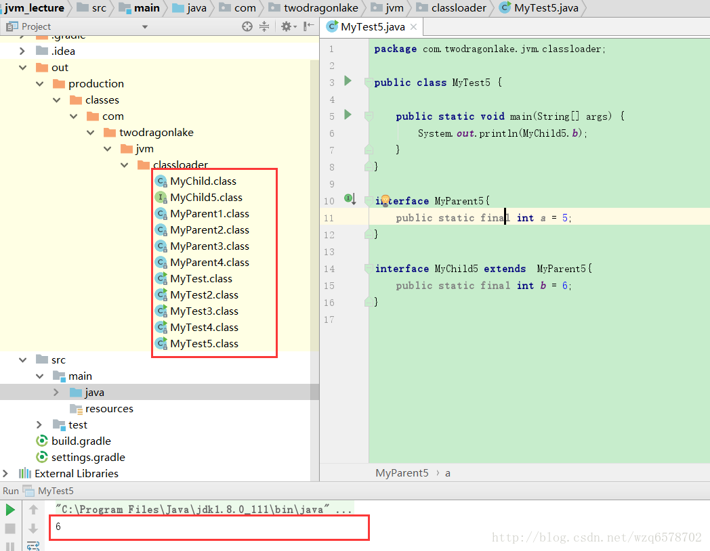
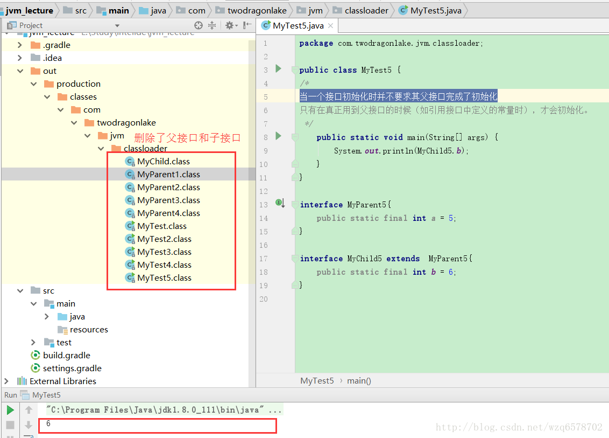
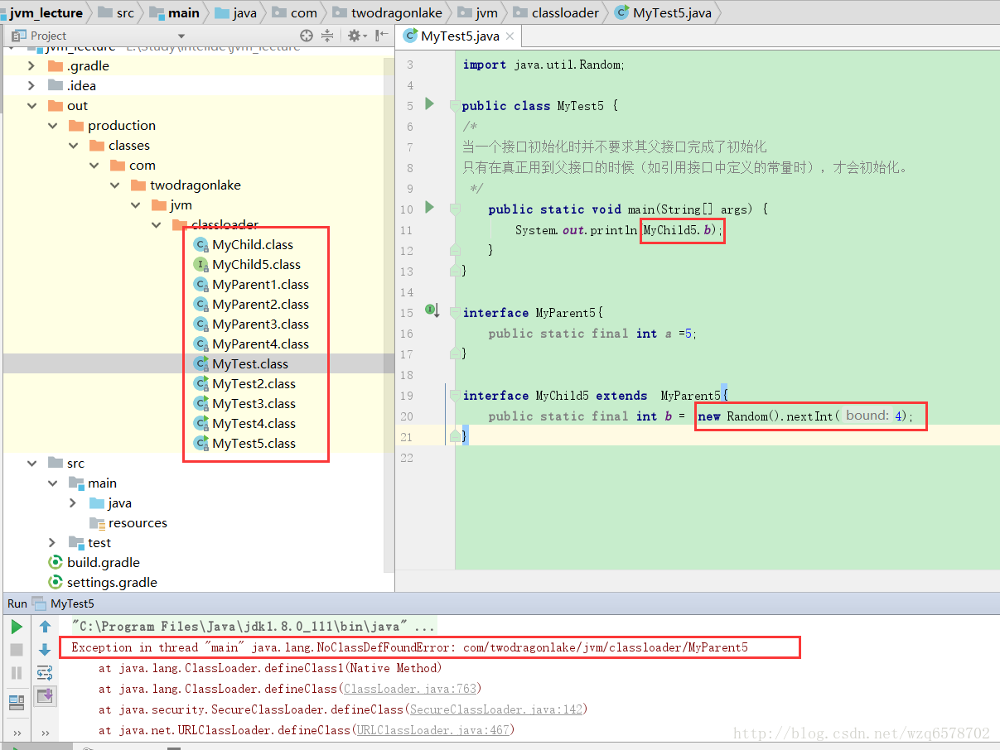
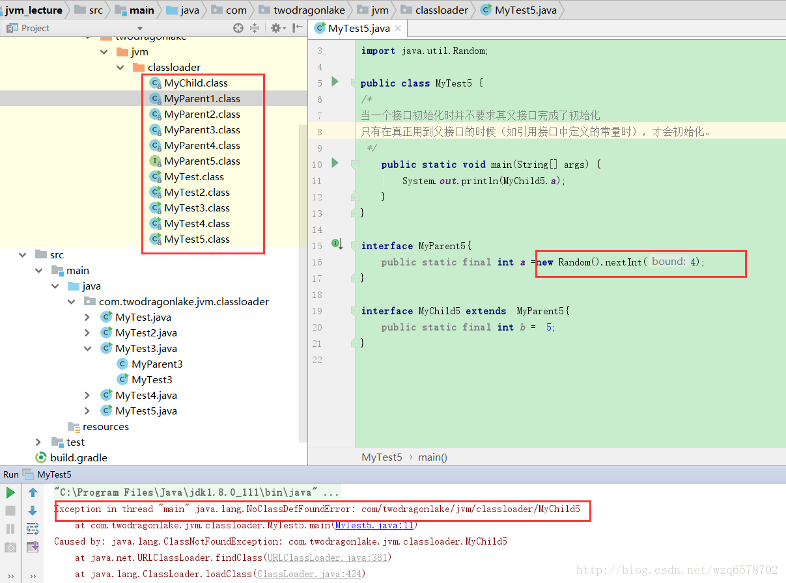
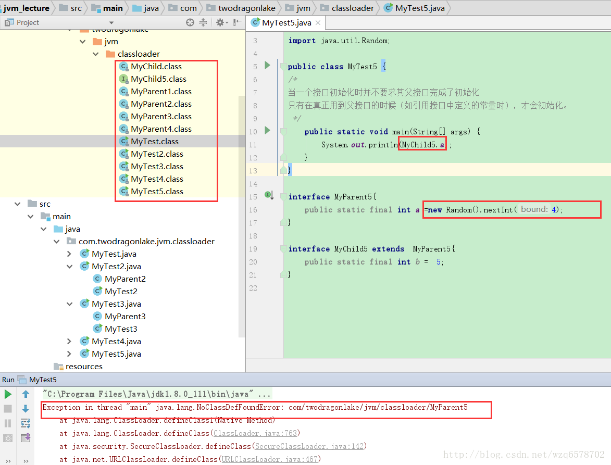
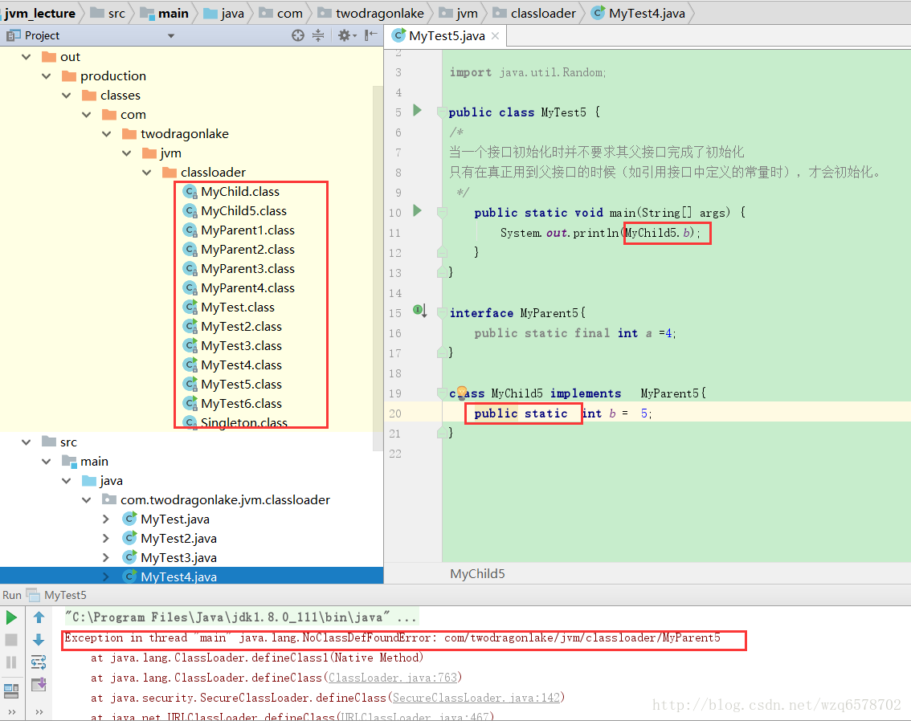

先看一段代码：
1 |
|
这段代码相信运行结果大家都能一目了然，那么父接口MyParent5和MyChild5 是否会初始化呢？由于在接口当中不能定义静态代码块， 因此我们把MyParent5的class文件删除再去运行:

由此得出当一个接口初始化时并不要求其父接口完成了初始化
我们在进一步，这时删除MyChild5 再去运行：

再接着我们这样写代码，然后删除父接口：

由此就可以得出，子接口的常量只有在运行期间才能确定的，并不会放到调用类的常量池当中，这时会触发父接口的初始化。
我们再次反过来实验：

这次我们删除了子接口，但是父接口的常量只有在运行期间才会确认，这个时候会触发子类的初始化。
还有下边这种情况：

总结：
当一个接口初始化时并不要求其父接口完成了初始化
只有在真正用到父接口的时候（如引用接口中定义的常量时），才会初始化。 而类不是这样的，原因就是借口中的变量本来就是final的。
接着我们把MyChild5改为Class的形式，然后删除MyParent5：

发现MyParent5找不到，因此补充结论：
只有使用类的常量的时候不会去加载接口，一般的静态变量，非常量都会加载接口。因为非常量都不会纳入到MyTest5的常量池当中，因此导致接口的初始化。
类加载器准备阶段很初始化阶段的重要意义：
我们写一个单例模式：
1 | public class MyTest6 { |
程序运行结果：
1 | 1 |
毫无悬念肯定是1 1 。
接下来我们改一下程序：
1 | public class MyTest6 { |
我们把counter2的位置改变了，那么运行结果是什么呢：
1 | 1 |
这个例子能充分体现类的加载阶段和初始化阶段的重要性，我们用第一篇的过程分析一波：
加载：查找并加载类的二进制数据【这个不说了，就是把Singleton的二进制文件放入内存】
连接：
验证：确保被加载类的正确性。【这个也不说了】
准备：为类的静态变量分配内存，并将其初始化为默认值。【此时Singleton的counter1赋予初始化值为0，singleton赋值为null，counter2赋值为0】
解析：把类中的符号引用装换为直接引用。【不说了】
初始化：为类的静态变量赋予正确的初始值。【程序初始化顺序是从上而下，首先是counter1程序员没有对它进行赋值，还是准备赋予的值为0，接着是singleton赋值为new Singleton()，此时会调用构造器，构造器调用完毕counter1=1，counter2=1，然后程序继续初始化，到了 public static int counter2=0;时，静态变量counter2重新赋值为0】